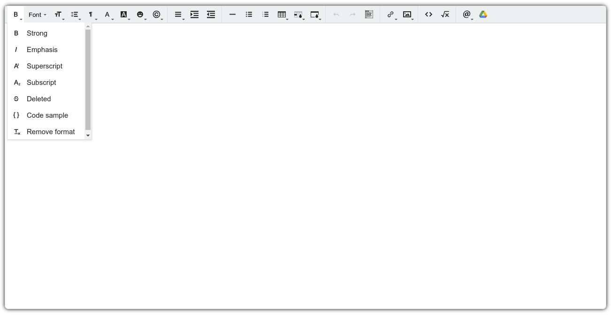
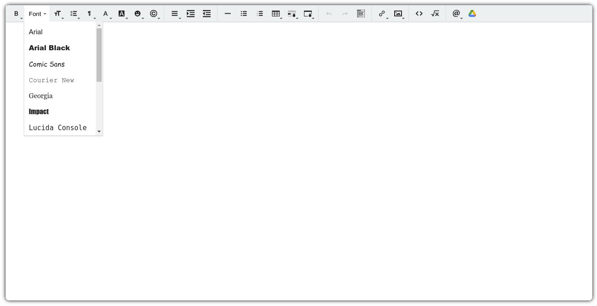
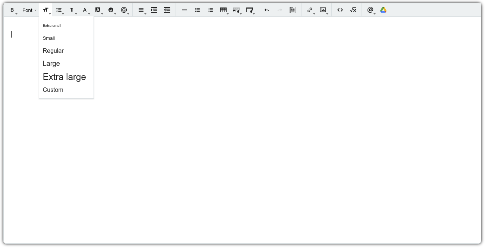
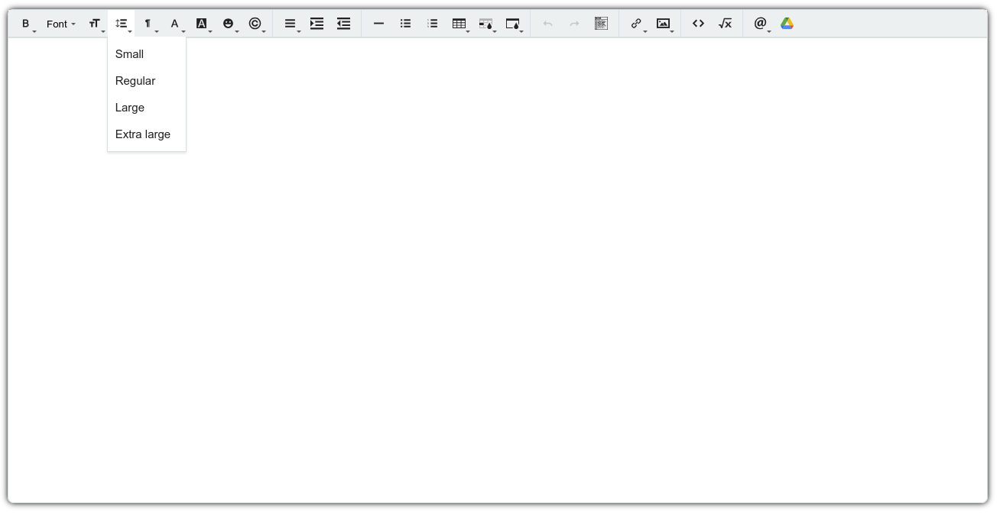
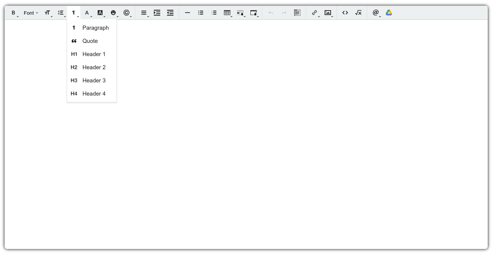
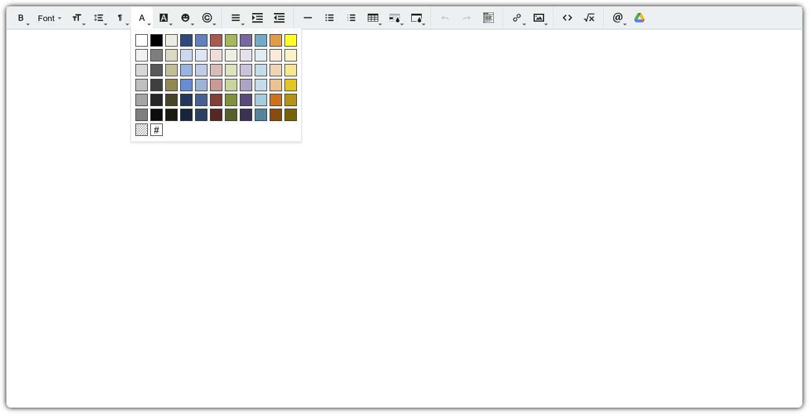
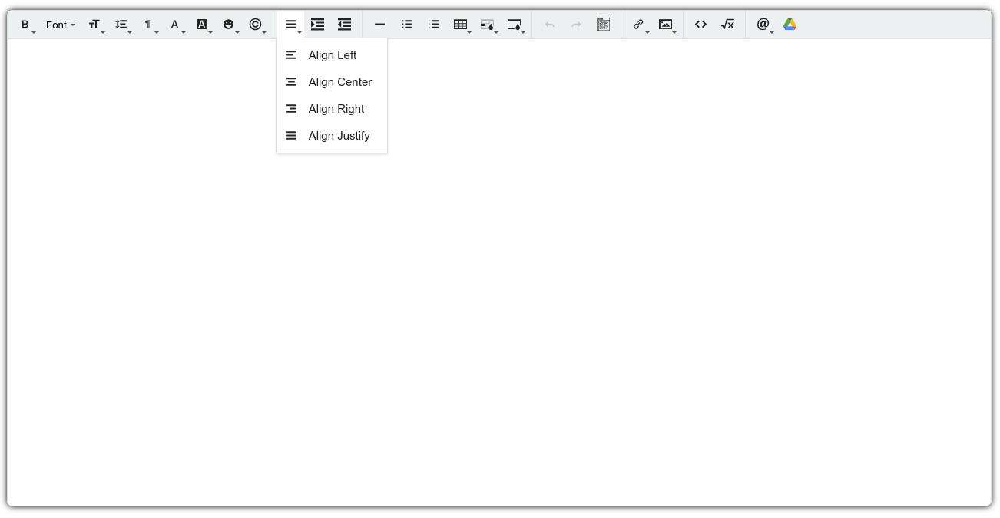
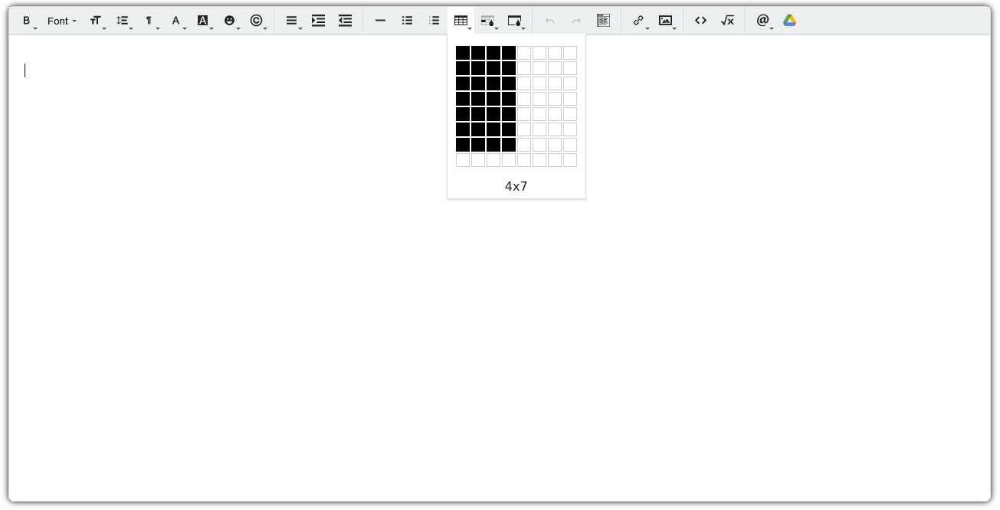
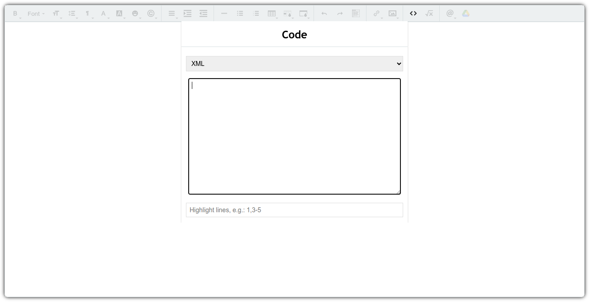
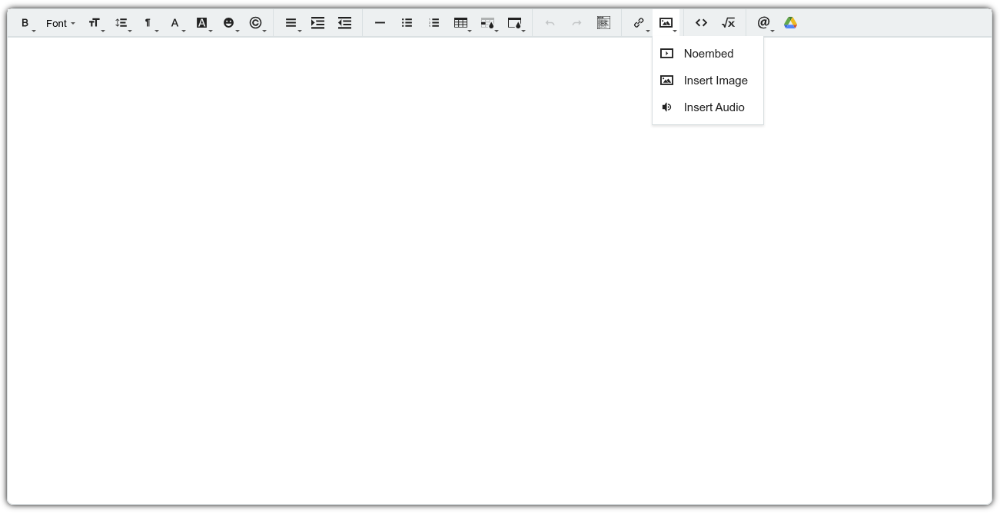

Screenshots¶
The first shot shows the configuration palette in the backend. The others a lot of the Trumbowyg Editor’s functionalities.
Check out a Typowyg live demo here.











The first shot shows the configuration palette in the backend. The others a lot of the Trumbowyg Editor’s functionalities.
Check out a Typowyg live demo here.